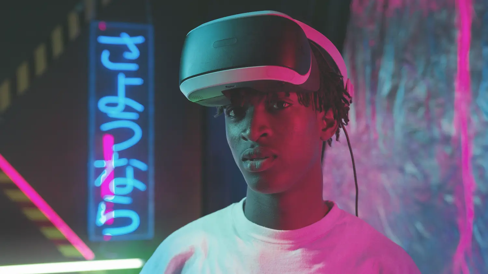

Ready to Take the Next Step
If you’ve finished Grade 12 and are 18 or older, you can apply for
a Shaper Learnership. It’s a chance to get real tech skills, grow
your confidence, and kick-start your career, all while learning in
a supportive, hands-on environment.
Apply Now
Dear Future Me
Hear from young people whose lives have been transformed through
learning and access.
Watch the Video

Your Future Might Be in Tech, Here's What That Means
Tech is more than just screens and code, it’s a path to real
impact and creativity. Learn what fields like software
development, data science, and design are really about.
Learn About Tech Careers

Learn for Free
Ready to take the first step? We’ve curated trusted, free learning
resources to help you build new skills, whether you’re curious
about coding, exploring design, or want to dive into data. Start
small, stay consistent, and unlock your future, one lesson at a
time.
Get Learning Resources